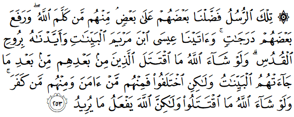

সেই রাসুলগণ, তাদের কয়েকজনকে আমি অন্যদের থেকে বেশি অনুগ্রহ করেছি। তাদের মধ্যে এমন কয়েকজন আছে, যাদের সাথে আল্লাহ কথা বলেছেন। এবং তাদের কাউকে তিনি বেশি মর্যাদা দিয়েছেন। মরিয়মের সন্তান ঈসা-কে আমি পরিস্কার প্রমাণ দিয়েছি এবং পবিত্র রূহ দিয়ে সহযোগিতা করেছি। যদি আল্লাহ ইচ্ছা করতেন, তাহলে তাদের পরে যেসব জাতি এসেছিল, তারা কেউ একে অন্যের বিরুদ্ধে মারামারি করত না, তাদের কাছে পরিস্কার প্রমাণ আসার পরেও। কিন্তু তাদের মধ্যে মতপার্থক্য তৈরি হলো, কেউ বিশ্বাস করলো, কেউ অবিশ্বাস করলো। যদি আল্লাহ চাইতেন, তাহলে তারা একে অন্যের বিরুদ্ধে মারামারি করত না, কিন্তু আল্লাহ যা চান, তাই করেন। [আল-বাক্বারাহ ২৫৩]
যখন রাসূল মুহাম্মাদ عليه السلام এর কার্টুন আঁকা হয়, তাঁর নামে আজেবাজে কথা ছড়ানো হয়, অপমানজনক চলচ্চিত্র বানানো হয়, তখন কিছু মুসলিমদের রক্ত গরম হয়ে যায়। অনেকেই রাস্তায় বেড়িয়ে অন্য নিরীহ মুসলিমদের গাড়ি, দোকান ভেঙ্গে রাসূলের عليه السلام প্রতি তাদের অগাধ ভালবাসার প্রমাণ দেখান। রাসূলের عليه السلام ‘শিক্ষার প্রতি সম্মান’ দেখিয়ে অ্যাম্বাসি ভাংচুর করেন, যেন যারা রাসূলের عليه السلام অপমান করে, তারা আর ভয়ে কখনো এরকম কাজ করার দুঃসাহস না দেখায়। যদিও সেরকম কিছু কোনোদিন হয়নি, বরং যারা এই কাজগুলো করে, তারা আরও বেশি প্রশ্রয় পেয়ে আরও বেশি জনপ্রিয় হয়ে গেছে। মুসলিমরা প্রতিক্রিয়া দেখানোর আগে কয়েক হাজার মানুষ তাদের কথা জানতো। প্রতিক্রিয়া দেখানোর পর সারা পৃথিবীতে সংবাদ শিরোনাম হয়ে তাদের ব্যবসা কোটি কোটি মানুষের কাছে পৌঁছে গেছে। রাসূলের عليه السلام বিরুদ্ধে নোংরামি আরও বেড়ে গেছে। মুসলিমরা তাদের ‘ঈমানী দায়িত্ব পালন’ করে রাসূলের عليه السلام অপমান গুটি কয়েক মানুষের থেকে কোটি মানুষের কাছে পৌঁছে দিয়েছে।
তাহলে কী রাসূলের عليه السلام অপমান হলে আমরা প্রতিবাদ করব না? অবশ্যই করবো, কিন্তু করার সময় প্রজ্ঞা দেখাতে হবে, মূর্খতা দেখালে হবে না। একইসাথে আমাদের সব নবীর প্রতি নিরপেক্ষ হতে হবে। বহু বছর আগে থেকেই ঈসা عليه السلام এর বিকৃতি করে কার্টুন দিয়ে বাজার ভরে গেছে, হলিউডের চলচ্চিত্রগুলোতে তাকে নিয়ে নিয়মিত ব্যাঙ্গ করা হয়। এগুলো নিয়ে মুসলিমদের কোনো মাথাব্যাথা নেই। ব্যাপারটা এমন যে, ঈসা عليه السلام হচ্ছেন খ্রিস্টানদের সমস্যা, মুসলিমদের তাকে নিয়ে কোনো চিন্তা না করলেও চলবে। ঈসা عليه السلام এর অপমান হলে তো খ্রিস্টানদের অপমান হয়, মুসলিমদের তাতে কিছু যায় আসে না। অন্য কোনো নবীর সম্মান রক্ষা করা মুসলিমদের ঈমানী দায়িত্ব না।
আল্লাহ تعالى এই আয়াতে পরিষ্কার করে বলে দিয়েছেন এনারা সবাই রাসূল। এনাদের কাউকে তিনি একে অন্যের থেকে বেশি অনুগ্রহ করেছেন, কিন্তু তাঁরা প্রত্যেকেই রাসূল। পৃথিবীতে প্রথম যেই মানুষের সাথে একাধিকবার মহাজাগতিক যোগাযোগ হয়েছে, তিনি হচ্ছেন মুসা عليه السلام| তার সাথে আল্লাহ تعالى নিজে কথা বলেছেন, কোনো ফেরেশতার মাধ্যম ছাড়া। মানবজাতির সাথে মহাবিশ্বের সৃষ্টিকর্তার সরাসরি যোগাযোগ ইতিহাসে মাত্র তিনবার ঘটেছে।[১১]
মরিয়মের সন্তান ঈসা-কে আমি পরিস্কার প্রমাণ দিয়েছি এবং পবিত্র রূহ দিয়ে সহযোগিতা করেছি।
সবচেয়ে বড় অলৌকিক নিদর্শন নিয়ে এসেছিলেন ঈসা عليه السلام, যিনি পিতা ছাড়াই জন্ম হয়েছিলেন। তিনি শিশু অবস্থায় মায়ের কোল থেকেই কথা বলতেন, বনী ঈসরাইলদের শিক্ষা দিতেন। তিনি জন্ম হয়েছিলেন তাওরাত এবং ইঞ্জিল-এর হাফিয অবস্থায়। তাকে অন্য রাসূলের عليه السلام মত বহু বছর ধরে ফেরেশতার মাধ্যমে ওহী পেয়ে কষ্ট করে মুখস্ত করে হাফিয হতে হয়নি। আল্লাহ تعالى তাঁকে তাওরাত এবং ইঞ্জিল দুটোই শিখিয়ে পৃথিবীতে পাঠিয়েছিলেন। শিশুকাল থেকেই তিনি বনী ঈসরাইলের গুরুদের তাওরাতের বোঝায় ভুল ধরিয়ে দিতেন। তিনি অসুস্থকে সুস্থ করে দিয়েছেন, অন্ধকে দৃষ্টি ফিরিয়ে দিয়েছেন, এমনকি মৃতকে জীবিত করে দিয়েছিলেন আল্লাহর تعالى ইচ্ছায়। তিনিই একমাত্র রাসূল عليه السلام যিনি মারা যাননি, যাকে আল্লাহ تعالى উঠিয়ে নিয়ে নিজের সান্নিধ্যে রেখেছেন। এই সব রাসূলদের عليه السلام আল্লাহ تعالى বিরাট সম্মান দিয়েছেন। কিন্তু মুসলিমরা আজকে তাদেরকে কতখানি সম্মান দেয়? প্রতিনিয়ত তাদের অপমান করে কার্টুন, চলচ্চিত্র বানানো হয়েছে, জঘন্য কালিমা দিয়ে বই লেখা হচ্ছে। চোখে পড়ার মত প্রতিবাদ করতে কাউকে দেখা যাচ্ছে না।
এই আয়াতে আল্লাহ تعالى রাসুলুল্লাহ মুহাম্মাদ عليه السلام কে শেখাচ্ছেন যে, তিনি সেই সব মহাসম্মানিত অতিমানবদের প্রতিনিধি। তাঁকে আল্লাহ تعالى অনেক বড় সম্মান দিয়েছেন শেষ নবী হিসেবে পাঠিয়ে। মুসা عليه السلام এবং ঈসা عليه السلام এর মত মহাসম্মানিত পুরুষদের থেকেও তিনি বেশি সম্মান পেয়েছেন, কারণ তিনি এসেছেন কুর’আন নিয়ে, যা সারা মানবজাতির জন্য সারা জীবন পথপ্রদর্শক হয়ে থাকবে। তাঁর সাথে আল্লাহ تعالى নিজে কথা বলেছেন, যেরকম কিনা মুসা عليه السلام এর সাথে কথা বলেছিলেন। তাকে ঈসা عليه السلام এর মত অলৌকিক কাজ করে দেখানোর ক্ষমতা দিয়েছেন। একইসাথে তাকে এবং আমাদেরকে একটি গুরুত্বপূর্ণ উপলব্ধি দিয়েছেন যে—
যদি আল্লাহ ইচ্ছা করতেন, তাহলে তাদের পরে যেসব জাতি এসেছিল, তারা কেউ একে অন্যের বিরুদ্ধে মারামারি করত না, তাদের কাছে পরিস্কার প্রমাণ আসার পরেও।
এখান থেকে আমরা জানতে পারি যে, রাসুলদের মাধ্যমে সারা পৃথিবীর সব মানুষকে সারা জীবনের জন্য পাকা মুসলিম বানিয়ে ফেলা আল্লাহর تعالى উদ্দেশ্য নয়। যদি আল্লাহ تعالى চাইতেন, তাহলে তিনি تعالى অবশ্যই এমন কিছু করতে পারতেন যে, কোনোদিন কেউ কোনো ধরনের মতপার্থক্য তৈরি করতে পারত না। তাদের তিনি تعالى বাধ্য করতে পারতেন, যেন তারা সবাই ধর্মের সব ব্যাপারে একমত হয়ে বিশ্বাস করতে বাধ্য হতো। কিন্তু আল্লাহর تعالى ইচ্ছা ছিল না মানুষকে এমন পরিস্থিতিতে ফেলা, যেন মানুষ কোনো ধরনের মতপার্থক্য করার সুযোগ না পেয়ে সবসময় পাকা মুসলিম হয়ে থাকতে বাধ্য হয়ে যায়।
যদি তাই হতো, তাহলে এই দুনিয়াটা আর কোনো পরীক্ষা থাকত না। জান্নাতে যাওয়াটা আর কোনো অর্জন হতো না। সবাই জান্নাতের ফ্রি টিকিট পেয়ে যেত। মানুষের চিন্তার স্বাধীনতা কেড়ে নিয়ে, মতপার্থক্যের ক্ষমতা নষ্ট করে দিয়ে, মানুষকে ধর্মের সব ব্যাপারে একমত করতে বাধ্য করাটা আল্লাহর تعالى ইচ্ছা নয়। আল্লাহ কোনো স্বৈরাচারী শাসক নন। তিনি মানুষকে চিন্তার স্বাধীনতা দিয়েছেন, বুদ্ধি দিয়েছেন, বিবেক এবং পথনির্দেশ দিয়েছেন ভালো-মন্দ বোঝার জন্য।[৮] তিনি মানুষকে একে অন্যের ক্লোন হিসেবে তৈরি করেননি। প্রত্যেকটি মানুষের মধ্যে স্বতন্ত্রতা, স্বকীয়তা, নিজস্ব বুদ্ধিমত্তা আছে। মানুষের কাজ হচ্ছে নিজ নিজ স্বতন্ত্রতাকে ধরে রেখে, সেটাকে ঠিকভাবে কাজে লাগিয়ে মানবজাতির জন্য অবদান রেখে যাওয়া।[৬]
অনেকেই প্রশ্ন করেন, কেন আল্লাহ تعالى এমন কিছু করলেন না, যেন ধর্মের মধ্যে এত বিভ্রান্তি তৈরি না হয়, এত মাযহাব তৈরি না হয়, কুর’আন, হাদিসের এত ভিন্ন ভিন্ন ব্যাখ্যা তৈরি না হয়? কেন আল্লাহ تعالى সাধারণ মানুষকে এত সমস্যার মধ্যে ফেলে দিলেন? চারিদিকে এত মত, এত দল, কুর’আনের এত ধরনের ব্যাখ্যা, হাদিস নিয়ে এত সন্দেহ, আলিমদের মধ্যে এত মারামারি — সাধারণ মানুষ কীভাবে বুঝবে কোনটা ঠিক, কোনটা ভুল? আল্লাহ تعالى কেন এতসব সমস্যা তৈরি হতে দিলেন?
ধর্ম নিয়ে মানুষ যখন এধরনের প্রশ্ন করে, তখন তাকে জিজ্ঞেস করতে হবে, আপনি যা চান সেটা হতে হলে সমাধান কী হবে? শুধু কোনো কিছু চাইলেই হবে না, সমাধান দিতে হবে। তারপর সেই সমাধান নিয়ে চিন্তা করলেই বের হয়ে যাবে সেই সমাধানে কত সমস্যা আছে।
যেমন, যদি আমরা ধর্মের মধ্যে কোনো ধরনের মতপার্থক্য তৈরি করার সুযোগ হতে দিতে না চাই, তাহলে সমাধান হচ্ছে—
১) পৃথিবীর প্রতিটি মানুষকে কুর’আন এবং হাদিস পড়ে ঠিক একই উপলব্ধি পেতে হবে, সামান্যতম এদিক ওদিক হওয়া যাবে না। প্রত্যেক মানুষের জ্ঞান, অভিজ্ঞতা একই হতে হবে, যেন সবাই একই সিদ্ধান্ত এবং উপলব্ধিতে পৌঁছে।
২) পৃথিবীর কোনো মানুষ যেন কুর’আন বা হাদিসের কোনো ব্যাখ্যা লিখতে না পারে, যাতে করে কোনো ধরনের মত পার্থক্য তৈরি হওয়ার সুযোগ হয়। লিখলেও প্রতিটা মানুষ ঠিক একই কথা লিখবে। কেউ ভিন্ন কিছু লিখতে গেলেই তার হাত অচল হয়ে যাবে।
৩) পৃথিবীতে প্রতিটি মানুষ, সমাজ, জাতির অবস্থা ঠিক একইরকম হতে হবে, যেন কুর’আন এবং হাদিস প্রতিটি মানুষ, সমাজ এবং জাতির বেলায় ঠিক একইভাবে প্রযোজ্য হয়।
৪) পৃথিবীতে প্রতিটি মানুষকে স্বার্থহীন, সৎ হতে হবে, যেন কেউ নিজের স্বার্থে কোনো ধরনের উদ্দেশ্যমূলক ব্যাখ্যা দিতে না পারে।
আমরা একটু চিন্তা করলেই দেখতে পারি, কেন উপরের একটিও হওয়া সম্ভব নয়। (১) হওয়া সম্ভব নয়, কারণ মানুষ রোবট না। মানুষের চিন্তা ভাবনা অত্যন্ত জটিল, প্রত্যেকেই স্বতন্ত্র বৈশিষ্ট্যের অধিকারী, প্রত্যেকের চিন্তার গভীরতা, আবেগের মাত্রা ভিন্ন। একারণে দুটো মানুষের চিন্তাভাবনা কখনই সবসময় একই রকম হবে না।
যেমন, যদি দশ জন মানুষকে বলা হয়, “কালকে দমকা হাওয়া সহ ভারি বৃষ্টি হবে”, কেউ ভাববে কালকে এমন বৃষ্টি হবে যে, রাস্তায় হাঁটু পানি হয়ে যাবে। কেউ ভাববে কালকে ভারি বৃষ্টি হলেও পানি জমবে না, সুতরাং স্কুল, কলেজ, অফিস খোলা থাকবে। সুতরাং একজন ফাতওয়া দিবে যে, কালকে বাসার বাইরে বের হওয়া যাবে না। অন্যজন ফাতওয়া দিবে যে, কালকে বাসার বাইরে বের হতে হবেই, স্কুল, কলেজ, অফিস সব খোলা রাখতে হবে। দুই ফাতওয়ার সমর্থকদের মধ্যে শুরু হবে দ্বন্দ্ব। একদল আরেকদলকে উগ্রপন্থি বলবে, উগ্রপন্থি দল অন্যদলকে সরকারের চামচা বলবে। সাধারণ মানুষ পড়ে যাবে বিপাকে।
পরিস্কার ভাষায় ‘ভারি বৃষ্টি’ বলার পরেও একেক মানুষ সেটাকে একেকভাবে নেবে। যদি দশটা রোবটকে এই কথা বলা হতো, তাহলে দশটা রোবট ঠিক একইভাবে বুঝত। কিন্তু মানুষ রোবট না। এই যদি হয় বৃষ্টির মত একটা সাধারণ ব্যাপারে মতপার্থক্য, তাহলে ধর্মের মত এত জটিল ব্যাপারে মত পার্থক্য হওয়াটাই স্বাভাবিক। এমনটা নয় যে, শুধু ধর্ম নিয়েই মানুষের মধ্যে মতপার্থক্য। বিজ্ঞানীদের মধ্যে প্রতিষ্ঠিত বিজ্ঞানের সুত্র, আবিস্কার, পর্যবেক্ষণ নিয়ে ব্যাপক মতপার্থক্য আছে। বিগ ব্যাংগ-এর সমর্থকদের ইনফ্লেশন থিওরির সমর্থকরা জোরালো ভাষায় মূর্খ বলে দাবি করে। ইনফ্লেশনের সমর্থকদের বিগ ব্যাংগ -এর সমর্থকরা পাগল বলে দাবি করে। চিকিৎসা বিজ্ঞানীদের মধ্যে বহু রোগের কারণ এবং প্রতিকার নিয়ে চুলাচুলি অবস্থা। একজন আরেকজন ভুল প্রমাণ করে পেপার লিখে, তখন আরেকজন অন্যজনকে ভুল প্রমাণ করে পেপার লেখে। দুই পক্ষই কীভাবে যেন পিএইচডি পেয়ে যায়। মানুষের যেই বিষয়েই জ্ঞান আছে, সেই বিষয়েই মতপার্থক্য আছে।
(২) হওয়া সম্ভব না, কারণ তাহলে কেউ যখনি কুর’আন বা হাদিস নিয়ে চিন্তা করতে যাবে, তার চিন্তাভাবনা আটকে দিতে হবে। লিখতে গেলে হাত অচল করে দিতে হবে। মানুষকে কুর’আন বা হাদিস নিয়ে কোনো ধরনের চিন্তা করতে দিলে, লিখতে দিলে ভিন্ন ভিন্ন অনুবাদ, বুঝ আসবেই, কারণ মানুষের জ্ঞান, অভিজ্ঞতা, পক্ষপাতিত্ব থাকবেই। কুর’আন এবং হাদিসকে দেওয়া হয়েছে পথপ্রদর্শক বা গাইড (আরবিতে আল-হুদা) হিসেবে, যেন মানুষ তার পরিস্থিতি অনুসারে সেগুলোকে কাজে লাগিয়ে পরিস্থিতির উপযোগী সমাধান বের করে নিতে পারে।
যেমন, কুর’আন, হাদিস বা চার ইমামদের মাযহাবে কোথাও ট্রাফিক আইন নেই। তাই বলে কি মুসলিম দেশে কোনো ট্রাফিক আইন থাকবে না? অমুসলিম বা কুফরিতে জর্জরিত সরকার ট্রাফিক আইন দিলে সেটা মুসলিমরা বর্জন করবে? তারা নিজেদের ইচ্ছেমত যেভাবে ইচ্ছা গাড়ি চালাবে? —কিছু মুসলিম দলের কাছে কুর’আন, সুন্নাহ’র বাইরে মানুষের বানানো যে কোনো ধরনের আইন হচ্ছে তাগুত-এর আইন, যা মানতে তারা বাধ্য তো নয়ই বরং সেই আইন না মানাই ঈমানী দায়িত্ব। কিন্তু বেশিরভাগ মতবাদ অনুসারে শারিয়াহ’র সাথে সংঘর্ষ নেই এবং মানুষের কল্যাণ, নিরাপত্তার জন্য নির্ধারিত সব আইন সম্পূর্ণ ইসলাম সম্মত এবং মুসলিমরা মানতে বাধ্য। ট্রাফিক আইন, কপিরাইট আইন এগুলো সব মানতে মুসলিমরা বাধ্য।[৩৮৫][৩৮৬] সুতরাং মানুষের উপলব্ধিতে পার্থক্য থাকবেই। এই পার্থক্যের কারণ হচ্ছে মানুষের চিন্তার স্বাধীনতা, যা আল্লাহই মানুষকে দিয়েছেন।[৩]
(৩) হওয়া সম্ভব না, কারণ প্রতিটি মানুষ যদি ক্লোন হতো, প্রত্যেকে একে অন্যের হুবহু কপি হতো, ঠিক একই চিন্তাভাবনা করত, তারপরেও পৃথিবীর বিভিন্ন জায়গায় বসবাসের কারণে, পরিস্থিতির ভিন্নতার জন্য মানুষ ভিন্নভাবে চিন্তা করতে বাধ্য হতো। চিন্তার ভিন্নতা থেকে মতপার্থক্য আসবে, মানুষ ধর্মীয় পথনির্দেশকে নিজের পরিস্থিতির মত করে বুঝে নেবে। যদি মানুষের মধ্যে চিন্তার ভিন্নতা না থাকত, সব পরিস্থিতিতে যদি মানুষ একই চিন্তা করত, একই সমাধান দেওয়ার চেষ্টা করত, তাহলে মানুষ টিকে থাকতে পারত না। মানবজাতির টিকে থাকার অন্যতম কারণ হচ্ছে চিন্তার পার্থক্য, সৃজনশীলতা।[৬]
(৪) হওয়া সম্ভব না, কারণ মানুষ ফেরেশতা না। এমনকি ফেরেশতারাও ভিন্ন ভিন্নভাবে চিন্তা করে। ফেরেশতারা রোবট না। তাদের মধ্যেও আল্লাহর تعالى উদ্দেশ্য নিয়ে প্রশ্ন তৈরি হয়, তারা তাদের ‘চিন্তা’ গোপন রাখে, যেমন কিনা আমরা আদম-এর সৃষ্টির আয়াতে দেখেছি। তাহলে মানুষের মধ্যে মতপার্থক্য তো হবেই।
“কিন্তু তাদের মধ্যে মতপার্থক্য তৈরি হলো, কেউ বিশ্বাস করলো, কেউ অবিশ্বাস করলো।”
মানুষের মধ্যে মারামারি, মতপার্থক্য এমনিতেই হয়নি। এটা আল্লাহর تعالى ইচ্ছার অধীনেই হয়েছে। আল্লাহ تعالى মানুষকে তৈরি করেছেন তাঁর تعالى পথনির্দেশ গ্রহণ বা বর্জন করার ক্ষমতা দিয়ে। তিনি মানুষকে স্বাধীনতা দিয়েছেন একাধিক পথের মধ্যে কোনো একটিকে বেছে নেওয়ার ক্ষমতা দিয়ে। এর মানে এই নয় যে, মতপার্থক্য আল্লাহ تعالى পছন্দ করেন। আল্লাহর পথনির্দেশ না নেওয়া, মতবিরোধ করা আল্লাহ মোটেও পছন্দ করেন না, এবং তিনি কুর’আনে কয়েকটি আয়াতে সেটা জানিয়েছেন।[১৭]
কিন্তু মানুষের মধ্যে যে গুণের পার্থক্য, চিন্তাভাবনার স্বতন্ত্রতা, মেধা, আবেগের পার্থক্য — এগুলো সবই আল্লাহর تعالى ডিজাইন। মানুষকে পৃথিবীতে যে দায়িত্ব দিয়ে পাঠানো হয়েছে, তা পালন করার জন্য মানুষের মধ্যে এত বৈচিত্র্যতা থাকতে হবেই। সভ্যতার উন্নয়ন, প্রযুক্তির বিকাশ, দুর্যোগ মোকাবেলা —এসবের জন্য দরকার মানবীয় গুণাবলীর মধ্যে পার্থক্য, চিন্তার পার্থক্য, চিন্তার স্বাধীনতা। ধর্মীয় ব্যাপারে মতপার্থক্য হচ্ছে এই সব প্রয়োজনীয় বৈশিষ্ট্যর পার্শ্বপ্রতিক্রিয়া। এই পার্শ্বপ্রতিক্রিয়া থেকে যে সমস্যা তৈরি হয়, সেই সমস্যা সমাধান করার জন্য আল্লাহ تعالى মানবজাতির কাছে নবী পাঠান, যেন মানবজাতি সঠিক পথ থেকে দূরে চলে গেলে, নবীর সাহায্যে আবার সঠিক পথে ফিরে আসতে পারে। যারা সৎ, নিষ্ঠাবান, তারা আল্লাহর تعالى ইচ্ছায় সঠিক পথে ফিরে আসতে পারে। যারা স্বার্থপর, লোভী, অন্যায়কারী, তারা আল্লাহর تعالى ইচ্ছাতেই পারে না সঠিক পথে ফিরে আসতে। এভাবেই ন্যায় বিচার হয়, মানুষ ন্যায়বিচার পায় এবং আল্লাহ تعالى মানুষের প্রতি ন্যায় বিচার করেন।
“আল্লাহ تعالى মানুষের প্রতি কখনোই বিন্দুমাত্র অন্যায় করেন না, বরং মানুষই নিজের প্রতি অন্যায় করে।” — সুরাহ ইউনুস ১০:৪৪
সুত্র:
[১] বাইয়িনাহ এর কু’রআনের তাফসীর। [২] ম্যাসেজ অফ দা কু’রআন — মুহাম্মাদ আসাদ। [৩] তাফহিমুল কু’রআন — মাওলানা মাওদুদি। [৪] মা’রিফুল কু’রআন — মুফতি শাফি উসমানী। [৫] মুহাম্মাদ মোহার আলি — A Word for Word Meaning of The Quran [৬] সৈয়দ কুতব — In the Shade of the Quran [৭] তাদাব্বুরে কু’রআন – আমিন আহসান ইসলাহি। [৮] তাফসিরে তাওযীহুল কু’রআন — মুফতি তাক্বি উসমানী। [৯] বায়ান আল কু’রআন — ড: ইসরার আহমেদ। [১০] তাফসীর উল কু’রআন — মাওলানা আব্দুল মাজিদ দারিয়াবাদি [১১] কু’রআন তাফসীর — আব্দুর রাহিম আস-সারানবি [১২] আত-তাবারি-এর তাফসীরের অনুবাদ। [১৩] তাফসির ইবন আব্বাস। [১৪] তাফসির আল কুরতুবি। [১৫] তাফসির আল জালালাইন। [১৬] লুঘাতুল কুরআন — গুলাম আহমেদ পারভেজ। [১৭] তাফসীর আহসানুল বায়ান — ইসলামিক সেন্টার, আল-মাজমাআহ, সউদি আরব [১৮] কু’রআনুল কারীম – বাংলা অনুবাদ ও সংক্ষিপ্ত তাফসীর — বাদশাহ ফাহাদ কু’রআন মুদ্রণ কমপ্লেক্স
[৩৮৫] Ruling on buying copied computer programs – islamqa.info. (2016). Islamqa.info. Retrieved 4 October 2016, from https://islamqa.info/en/81614
[৩৮৬] Ruling on avoiding paying penalties and fines for traffic infractions – islamqa.info. (2016). Islamqa.info. Retrieved 4 October 2016, from https://islamqa.info/en/130222